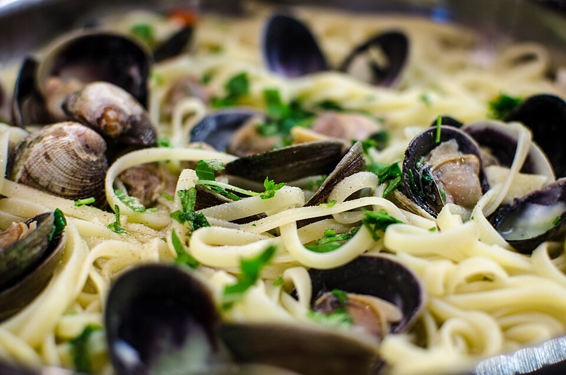

Frutos do mar · Massas com frutos do mar
Espaguete ao vôngole

Ingredientes
- 500 g de macarrão espaguete (ou espaguetinho)
- 3 colheres (sopa) de vinho branco seco
- 1 tablete de caldo de galinha dissolvido em 1 xícara (chá) de água fervente
- 5 colheres (sopa) de azeite
- 1 dente de alho esmagado
- 500 g de vôngoles com casca, lavados
- 1 colher (sopa) de manteiga
- 2 colheres (sopa) de cheiro-verde picado
- 1 pitada de pimenta-do-reino branca
Modo de preparo
- Cozinhe o macarrão em água fervente até ficar al dente. Enquanto isso, aqueça o vinho em fogo brando, com a panela destampada; junte o caldo e desligue.
- Noutra panela, aqueça o azeite e doure o alho. Misture o caldo com o azeite e o alho e deixe reduzir pela metade.
- Abaixe o fogo, junte os vôngoles, tampe e cozinhe até abrirem. Escorra o espaguete, envolva com a manteiga e acrescente aos poucos o molho, o cheiro-verde e a pimenta. Sirva em seguida.
Observação: recorte Maggi.